Para quién es: personal de vigilancia y supervisores de campus, operadores de la Central de monitoreo (línea 219-64-19), analistas de riesgos, Coordinación de Seguridad a personas y bienes y Equipo CASILDA. Versión: 19 de noviembre de 2026 · Alcance: módulo completo de Seguridad a personas y bienes (
/seguridad/*). Las pantallas se explican en el mismo orden del menú lateral.
⚠️ Datos de demostración. Mientras Backend no publique los servicios del módulo, funciona con un servidor simulado y verá un aviso amarillo «Datos de demostración». Nada de lo que registre llega al sistema real y las personas que aparecen son ficticias.
🔎 Cómo leer las capturas. Los círculos numerados de color naranja señalan dónde actuar. Cada captura va seguida de una tabla con el mismo número que dice qué hacer en ese punto.
Seguridad a personas y bienes (SPyB) atiende los hechos de seguridad física que afectan a la comunidad universitaria en los campus: recibe el reporte, lo analiza, lo conecta con los casos de la Ruta Violeta cuando corresponde y coordina las medidas de protección en campo.
🔒 Privacidad: Persona ≠ Caso CASILDA ≠ Actuación de seguridad. El personal de vigilancia y los operadores de la Central nunca ven notas clínicas, relatos sensibles ni expedientes disciplinarios; solo lo necesario para actuar. Vincular una actuación a un caso es una decisión manual del analista, con justificación obligatoria: el sistema nunca vincula solo por coincidencia de cédula.
| Acción | Vigilancia | Central | Analista | Coordinación | Administración |
|---|---|---|---|---|---|
| Ver la bandeja del analista | — | — | ✅ | ✅ | ✅ |
| Vincular, subsanar o cerrar como independiente | — | — | ✅ | ✅ | ✅ |
| Emitir órdenes, pedir cámaras y remitir | — | — | ✅ | ✅ | ✅ |
| Consultar medidas de protección activas | — | ✅ | ✅ | ✅ | ✅ |
| Registrar una llamada o recepción presencial | — | ✅ | ✅ | ✅ | ✅ |
| Registrar una novedad desde campo | ✅ | ✅ | ✅ | ✅ | ✅ |
| Ver el tablero de indicadores | — | — | ✅ | ✅ | ✅ |
| Ejecutar una orden (enlace seguro) | ✅ | — | ✅ | ✅ | ✅ |
Los roles son SPB_VIGILANTE, SPB_CENTRAL, SPB_ANALISTA, SPB_COORDINACION y ADMIN. Las opciones que su rol no puede usar no aparecen en el menú.
/seguridad/orden/:token.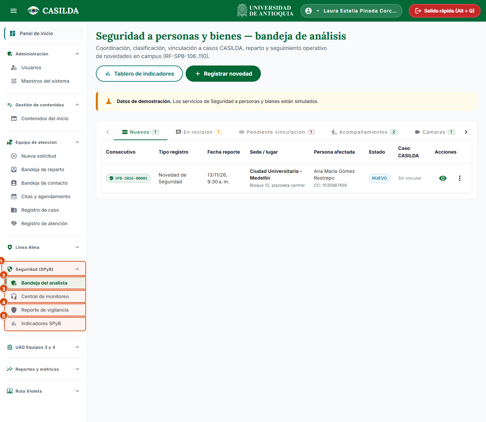
Captura 1. Menú lateral con la sección Seguridad (SPyB).
| # | Qué hacer |
|---|---|
| 1 | Abra o cierre la sección Seguridad (SPyB) con un clic. |
| 2 | Bandeja del analista (/seguridad/bandeja): donde se clasifica y reparte el trabajo. |
| 3 | Central de monitoreo (/seguridad/central): consulta de medidas y recepción de llamadas. |
| 4 | Reporte de vigilancia (/seguridad/reportar): formulario para quien está en campo. |
| 5 | Indicadores SPyB (/seguridad/indicadores): tablero de métricas. |
Las dos pantallas crean el mismo tipo de registro: una actuación con consecutivo SPB-AAAA-NNNNN que llega a la pestaña Nuevos de la bandeja del analista. Lo que cambia es quién la usa, en qué momento y cuánta información pide.
| Central de monitoreo (pestaña «Registrar recepción de situación») | Reporte de vigilancia («Reporte rápido de novedades en ronda») | |
|---|---|---|
| Quién la usa | Operador de la Central. | Vigilante o supervisor en campo. |
| Cuándo | Mientras atiende una llamada (línea 219-64-19), a una persona en ventanilla o un correo. | Cuando ve o atiende algo durante su ronda o en la portería. |
| Quién aparece como reportante | El operador de la Central (ya viene definido). | El supervisor, que debe identificarse (cédula, nombre y cargo). |
| Pide el canal | Sí: línea 219-64-19, correo, presencial, ronda u otro. | No: queda como «ronda operativa». |
| Datos de la persona | Completos: documento, nombres, teléfono, correo y vínculo con la Universidad. | Esenciales: documento, nombres y teléfono. |
| Consentimiento de la persona | Sí: lectura del consentimiento informado y autorización de la Ruta Violeta. | No. |
| Consulta de medidas activas | Sí, en la otra pestaña de la misma pantalla. | No. |
| Extensión | Formulario completo, 4 secciones. | Formulario corto, 4 secciones. |
Regla práctica: si le llegó una llamada o una persona, use la Central. Si lo vio usted en campo, use el Reporte de vigilancia.
Parte 1 — De la llegada al registro
Parte 2 — Del análisis al trámite
| Estado en pantalla | Qué significa |
|---|---|
| Nuevo | Llegó desde la Central o Vigilancia y nadie la ha revisado. |
| En revisión | El analista la está evaluando. |
| Subsanación requerida | Tiene datos incompletos y se devolvió a vigilancia para que los aclare. |
| Pendiente vinculación | Ya se analizó; falta decidir si pertenece a un caso de CASILDA. |
| Vinculado a caso | Se asoció a un caso de la Ruta Violeta (CAS-AAAA-NNNN), con justificación. |
| Actuación independiente | Se gestionó solo como tema de seguridad, sin relación con un caso. |
| Cerrado | Todas las órdenes y trámites terminaron. |
ℹ️ En la demostración, los datos de ejemplo ya traen actuaciones en varios estados. Los pasos entre En revisión y Pendiente vinculación los fijará el backend cuando esté conectado.
Menú → Seguridad (SPyB) → Bandeja del analista. Es la lista de trabajo del analista: todo lo que llega desde la Central o Vigilancia aparece aquí como una fila, y desde aquí se decide qué hacer con cada actuación.
💡 La idea clave: cada fila es una actuación (un reporte con consecutivo
SPB-AAAA-NNNNN). El analista la va moviendo de una etapa a otra hasta cerrarla.
Captura 2. Bandeja del analista con la pestaña «Nuevos».
| # | Qué hacer |
|---|---|
| 1 | Tablero de indicadores: abre las métricas del módulo. |
| 2 | Registrar novedad: abre el formulario de reporte para registrar algo directamente. |
| 3 | Pestañas con contador. El número dice cuántos elementos hay en esa etapa. |
| 4 | Tabla de actuaciones: una fila por actuación, con consecutivo, tipo, fecha, sede, persona, estado y caso. |
| 5 | Ojo: abre la ficha completa de la actuación (sección 7.4). |
| 6 | Tres puntos: abre el menú de gestión (sección 7.3). |
| Pestaña | Qué contiene | Qué hace el analista |
|---|---|---|
| Nuevos | Actuaciones recién llegadas que nadie ha revisado. | Las lee y decide el paso siguiente. Es la pestaña de entrada. |
| En revisión | Las que ya está evaluando, incluidas las devueltas a vigilancia. | Espera la corrección o termina el análisis. |
| Pendiente vinculación | Actuaciones analizadas a las que falta decidir si pertenecen a un caso. | Las vincula a un caso o las cierra como independientes. |
| Acompañamientos | Órdenes para que un vigilante acompañe a una persona. | Sigue su estado y copia el enlace seguro. |
| Cámaras | Solicitudes de video a las cámaras de seguridad. | Sigue si el video se extrajo, se entregó o no está disponible. |
| Remisiones | Lo enviado a Equipo de atención, Línea Alma, UAD o entidades externas, con su estado y los números de recibido o radicado. | Actualiza el estado de cada envío. |
| Requerimientos UAD | Citaciones a vigilantes como testigos y el estado de la notificación. | Verifica la notificación y la reenvía si hace falta. |
Las tres primeras pestañas muestran actuaciones. Las otras cuatro muestran trámites que el analista creó a partir de una actuación.
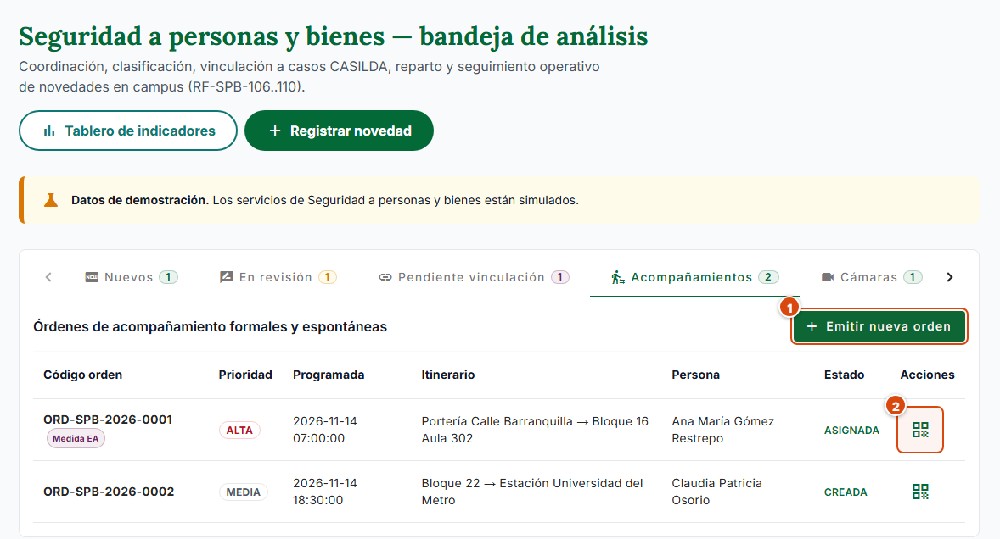
Captura 3. Pestaña «Acompañamientos».
| # | Qué hacer |
|---|---|
| 1 | Emitir nueva orden: crea una orden sin partir de una actuación. |
| 2 | Código QR: copia el enlace seguro de la orden para enviarlo al vigilante por un canal institucional. |
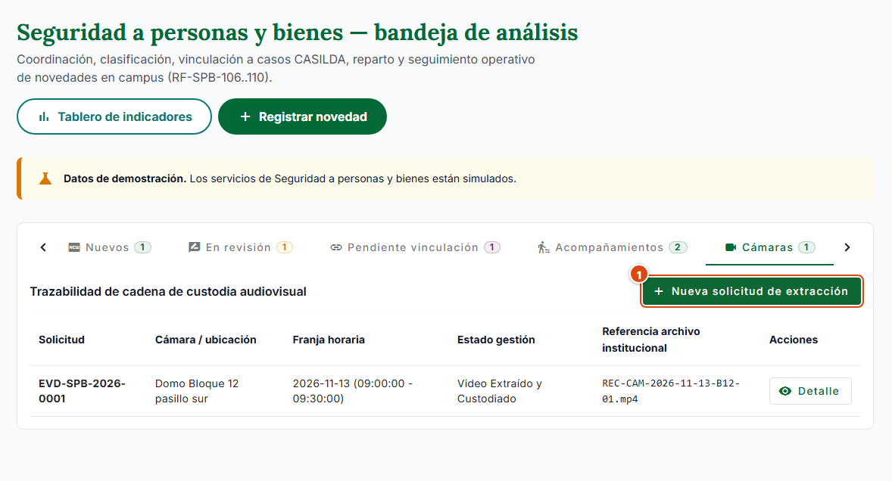
Captura 4. Pestaña «Cámaras».
| # | Qué hacer |
|---|---|
| 1 | Nueva solicitud de extracción: registra la solicitud de un video sin partir de una actuación. |
| Caso de uso | Situación | Qué hace el analista | Qué pasa después |
|---|---|---|---|
| El reporte llegó incompleto | Un vigilante reportó un altercado pero no dijo el lugar exacto. | Menú de gestión → Solicitar subsanación a vigilancia y escribe qué falta. | La actuación pasa a Subsanación requerida y el supervisor recibe la solicitud. Cuando corrige, vuelve a revisión. |
| La persona ya tiene un caso | Una estudiante que tiene un caso abierto en la Ruta Violeta reporta que la siguieron. | Vincular a caso CASILDA: revisa el caso sugerido, escribe la justificación y confirma. | La actuación pasa a Vinculado a caso y queda en la auditoría del caso. |
| El hecho no tiene relación con un caso | Le robaron una bicicleta a una persona que sí tiene un caso abierto. | Cerrar como actuación independiente y escribe el motivo. | Se archiva sin tocar el expediente reservado de la persona. |
| La persona tiene miedo de salir | Una persona con medida de protección debe salir del campus a las 6 p. m. | Emitir orden de acompañamiento con origen, destino, hora y prioridad alta; copia el enlace desde Acompañamientos. | El vigilante abre el enlace, acompaña y registra el informe; la orden pasa a Finalizada. |
| Hay que saber qué pasó | Se necesita ver quién estaba en el bloque 22 entre las 2:15 y las 2:45 p. m. | Solicitar grabación de cámara con ubicación, fecha, franja y motivo. | Aparece en Cámaras; el analista sigue la extracción y la entrega. |
| El caso requiere otra dependencia | La persona necesita contención psicológica o hay que iniciar un proceso disciplinario. | Remitir a EA / UAD / Alma, elige el destino y escribe el motivo. | Aparece en Remisiones; si es UAD, se registra el recibido y se pueden citar vigilantes en Requerimientos UAD. |
| Revisión del día | Al empezar el turno. | Recorre las pestañas: Nuevos (qué llegó), En revisión (qué espera respuesta) y Acompañamientos, Cámaras y Remisiones (trámites abiertos). | Ninguna actuación queda sin decisión. |
Pulse los tres puntos de la fila para abrir el menú.
Captura 5. Menú de gestión de una actuación.
| # | Opción | Cuándo usarla |
|---|---|---|
| 1 | Vincular a caso CASILDA | Los hechos se relacionan con un caso de Ruta Violeta. Solo aparece si la actuación aún no tiene caso. |
| 2 | Emitir orden de acompañamiento | Una persona necesita que un vigilante la acompañe. |
| 3 | Solicitar grabación de cámara | Hay que buscar un video de una franja y un lugar. |
| 4 | Remitir a EA / UAD / Alma | El caso debe pasar a otra dependencia. |
| 5 | Solicitar subsanación a vigilancia | El reporte tiene datos incompletos. |
| 6 | Cerrar como actuación independiente | El hecho no tiene relación con la Ruta Violeta. |
Vincular a caso CASILDA. El sistema cruza la cédula con los casos existentes y sugiere coincidencias. Revise que de verdad correspondan, complete el ID del caso y la justificación, y confirme.
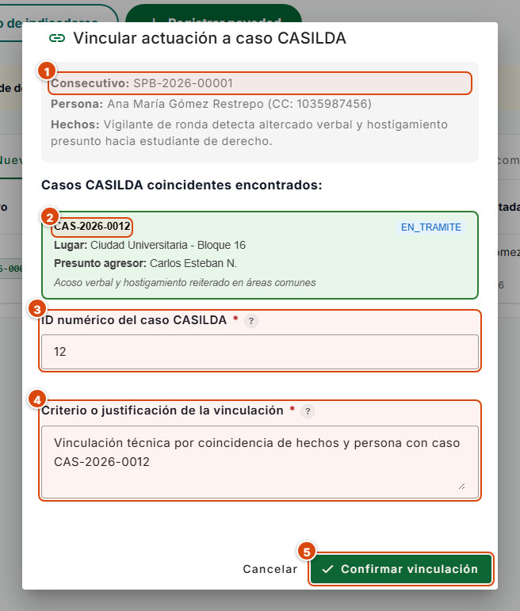
Captura 6. Ventana para vincular una actuación a un caso.
| # | Qué hacer |
|---|---|
| 1 | Revise el resumen de la actuación: consecutivo, persona y hechos. |
| 2 | Caso sugerido. Compare el lugar y los hechos antes de aceptarlo. |
| 3 | Escriba el ID numérico del caso (solo números). |
| 4 | Escriba el criterio o justificación (mínimo 10 caracteres). Queda en la auditoría. |
| 5 | Pulse Confirmar vinculación. |
🔒 El sistema nunca vincula solo por coincidencia de cédula: una persona puede haber vivido un hurto sin relación con su caso de Ruta Violeta.
Solicitar subsanación a vigilancia. Escriba qué debe corregir o ampliar el vigilante y pulse Enviar solicitud de subsanación.
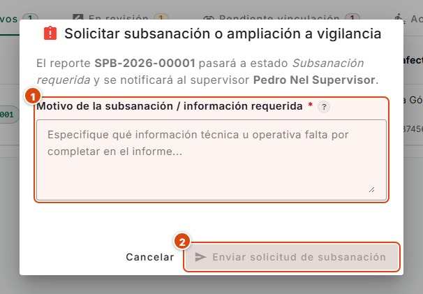
Captura 7. Ventana para solicitar la subsanación.
| # | Qué hacer |
|---|---|
| 1 | Indique con claridad qué dato falta o es inconsistente (mínimo 10 caracteres). |
| 2 | Pulse Enviar solicitud de subsanación. |
Emitir una orden de acompañamiento. Los datos de la persona y el origen vienen del registro. Complete la orden y pulse Generar orden y token; luego copie su enlace desde la pestaña Acompañamientos.
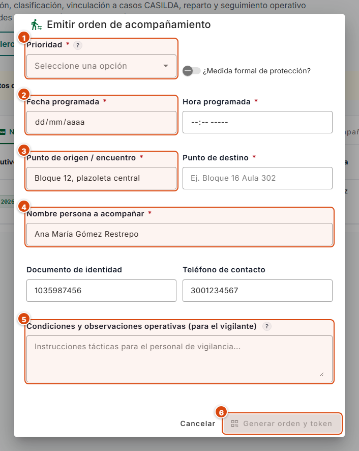
Captura 8. Ventana para emitir una orden de acompañamiento.
| # | Qué hacer |
|---|---|
| 1 | Elija la prioridad: alta (inmediata o por medida de protección), media (programada) o baja (preventiva). |
| 2 | Indique la fecha y la hora. No pueden estar en el pasado. |
| 3 | Escriba el punto de origen y el destino. |
| 4 | Confirme el nombre, documento y teléfono de la persona a acompañar. |
| 5 | Escriba las condiciones para el vigilante: solo instrucciones tácticas, nunca información del caso. |
| 6 | Pulse Generar orden y token. |
Solicitar una grabación de cámara. CASILDA registra la cadena de custodia, no los videos: los archivos quedan en el almacenamiento institucional.
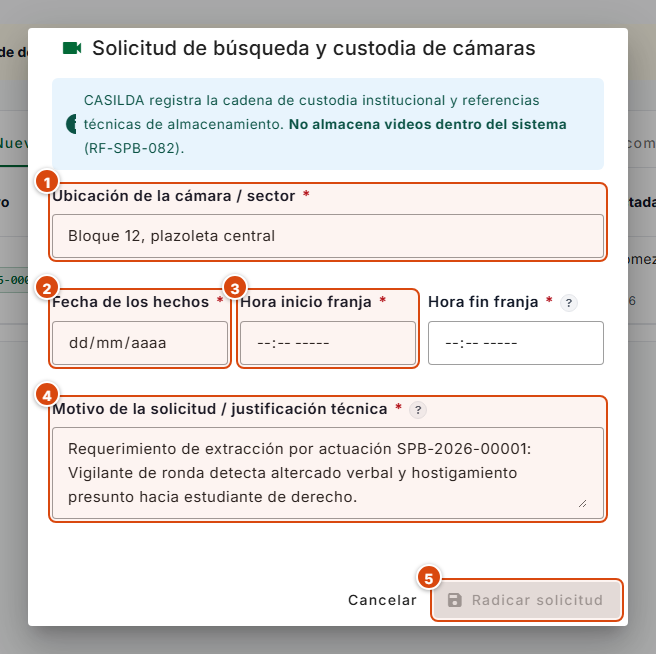
Captura 9. Ventana para solicitar la búsqueda y custodia de cámaras.
| # | Qué hacer |
|---|---|
| 1 | Escriba la cámara o el sector donde se busca el video. |
| 2 | Indique la fecha de los hechos (no puede ser futura). |
| 3 | Indique la hora de inicio y de fin de la franja. La de fin debe ser posterior. Entre más corta, más rápida la extracción. |
| 4 | Escriba el motivo o la justificación técnica. |
| 5 | Pulse Radicar solicitud. |
Remitir a otra dependencia. Elija el destino y escriba el motivo.
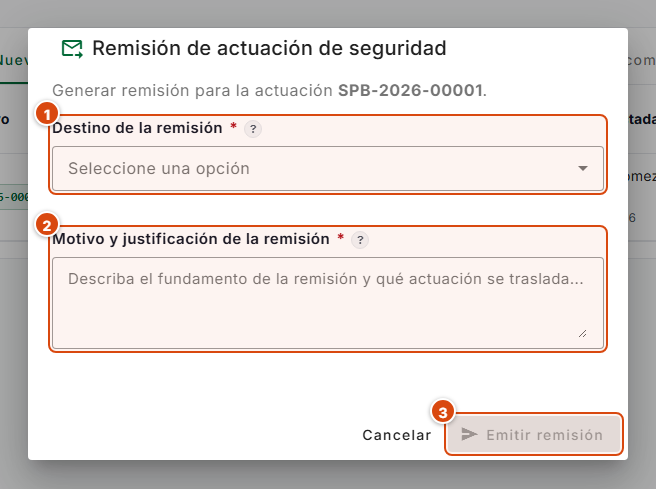
Captura 10. Ventana para remitir una actuación.
| # | Qué hacer |
|---|---|
| 1 | Elija el destino: Equipo de atención (valoración psicosocial y jurídica), Línea Alma (contención), UAD (proceso disciplinario) o entidad externa (Fiscalía, Policía u otra; pide el nombre de la entidad). |
| 2 | Escriba el motivo y la justificación. Lo verá la dependencia que recibe. |
| 3 | Pulse Emitir remisión. |
Cerrar como actuación independiente. El navegador abre un cuadro que pide el motivo. Escríbalo y acepte: la actuación se archiva.
Pulse el ojo de la fila para abrir la ficha completa. Desde ahí se hacen las mismas gestiones del menú.
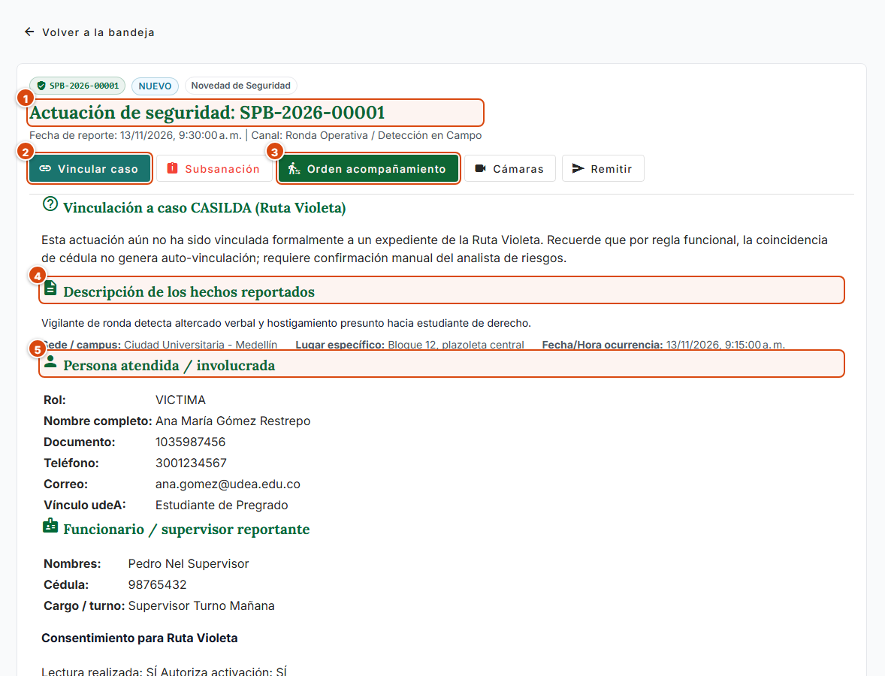
Captura 11. Ficha de una actuación con sus datos y acciones.
| # | Qué hacer |
|---|---|
| 1 | Encabezado: consecutivo, estado, tipo de registro, fecha y canal de recepción. |
| 2 | Vincular caso: abre la ventana de vinculación. Junto a ella están Subsanación, Orden acompañamiento, Cámaras y Remitir. |
| 3 | Orden acompañamiento: crea la orden con los datos de esta actuación. |
| 4 | Descripción de los hechos, con la sede y el lugar. |
| 5 | Persona atendida y supervisor reportante. Más abajo están el consentimiento y la bitácora de auditoría. |
Use Volver a la bandeja para regresar a la lista.
Menú → Seguridad (SPyB) → Central de monitoreo. Tiene dos pestañas: consultar si una persona tiene medida de protección y registrar la llamada o atención.
Úsela mientras atiende una llamada o a una persona en ventanilla: le dice en segundos si esa persona tiene una medida de protección vigente.
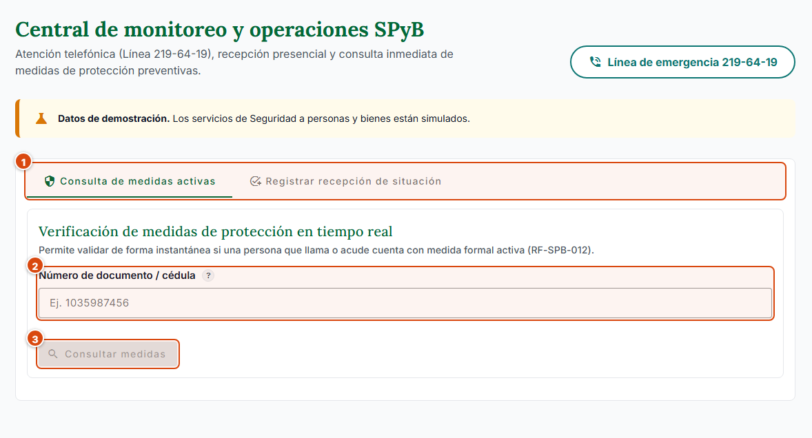
Captura 12. Pestaña «Consulta de medidas activas».
| # | Qué hacer |
|---|---|
| 1 | Esta es la pestaña Consulta de medidas activas; la otra es Registrar recepción de situación. |
| 2 | Escriba el número de documento, solo números (entre 5 y 20 dígitos). |
| 3 | Pulse Consultar medidas o Enter. El botón se habilita cuando el documento es válido. |
| Resultado | Qué verá | Qué hacer |
|---|---|---|
| Medida de protección activa | Cuadro rojo con el caso, la medida, su vigencia y las condiciones operativas. | Aplique las condiciones y, si hace falta, emita una orden de acompañamiento. |
| Sin medida vigente | Cuadro gris: «Sin medida de protección vigente registrada». | Siga con la atención normal. Si la persona se siente insegura, registre la recepción (8.2). |
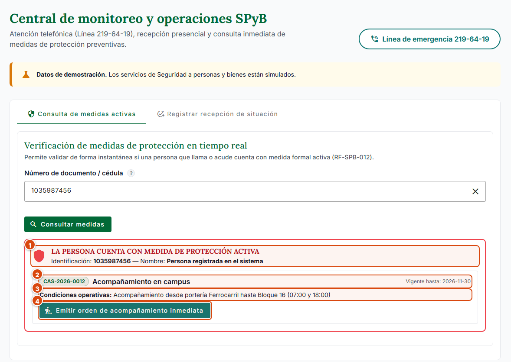
Captura 13. Resultado de la consulta con medida de protección activa.
| # | Qué hacer |
|---|---|
| 1 | Confirme que el documento y el resultado corresponden a la persona que atiende. |
| 2 | Caso y tipo de medida, con su fecha de vigencia. |
| 3 | Condiciones operativas: lo que debe hacer el personal de seguridad. |
| 4 | Pulse Emitir orden de acompañamiento inmediata para crear la orden con los datos de la medida. |
💡 Para practicar: use el documento
1035987456; devuelve una medida activa.
Abra la pestaña Registrar recepción de situación («Recepción de solicitud o situación de seguridad»). Recuerde cuándo usarla en la sección 4.
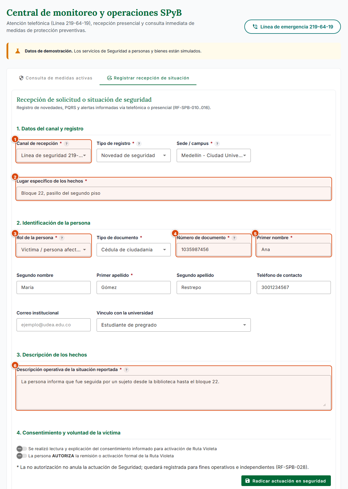
Captura 14. Formulario de recepción de una situación de seguridad.
| # | Qué hacer |
|---|---|
| 1 | Canal, tipo de registro y sede. Elija el canal (línea 219-64-19, correo, presencial…), el tipo (novedad, alerta temprana, PQRS, informe de acompañamiento) y la sede. |
| 2 | Escriba el lugar específico: bloque, plazoleta o portería. |
| 3 | Rol de la persona: persona afectada, persona señalada u otro interviniente o testigo. |
| 4 | Elija el tipo de documento y escriba el número. Solo acepta los caracteres del tipo elegido. |
| 5 | Escriba primer nombre, segundo nombre, primer apellido y segundo apellido, cada uno en su campo. Teléfono (7 a 12 dígitos), correo y vínculo con la Universidad son opcionales. |
| 6 | Descripción de los hechos: relato objetivo, mínimo 10 caracteres. Describa qué pasó, no opiniones. |
La última sección pide el consentimiento de la persona. Los dos interruptores empiezan apagados: active el primero solo si leyó el consentimiento informado y el segundo solo si la persona autoriza activar la Ruta Violeta. Si no autoriza, la actuación igual queda registrada para fines operativos.
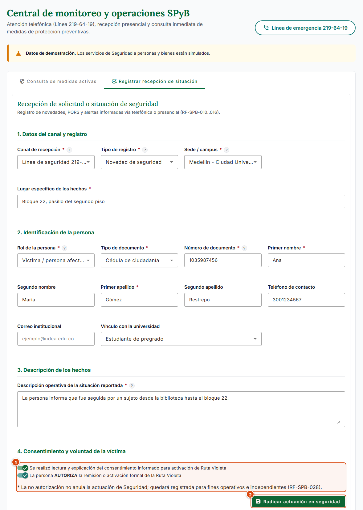
Captura 15. Sección de consentimiento y botón para radicar.
| # | Qué hacer |
|---|---|
| 1 | Marque los interruptores según lo que la persona respondió. |
| 2 | Pulse Radicar actuación en seguridad. Si está deshabilitado, falta algún campo obligatorio o hay un campo en rojo. |
Al terminar aparece un aviso con el consecutivo oficial (SPB-AAAA-NNNNN) y el formulario queda vacío. Anote el consecutivo si debe informarlo a la persona: la actuación ya está en la pestaña Nuevos de la bandeja del analista.
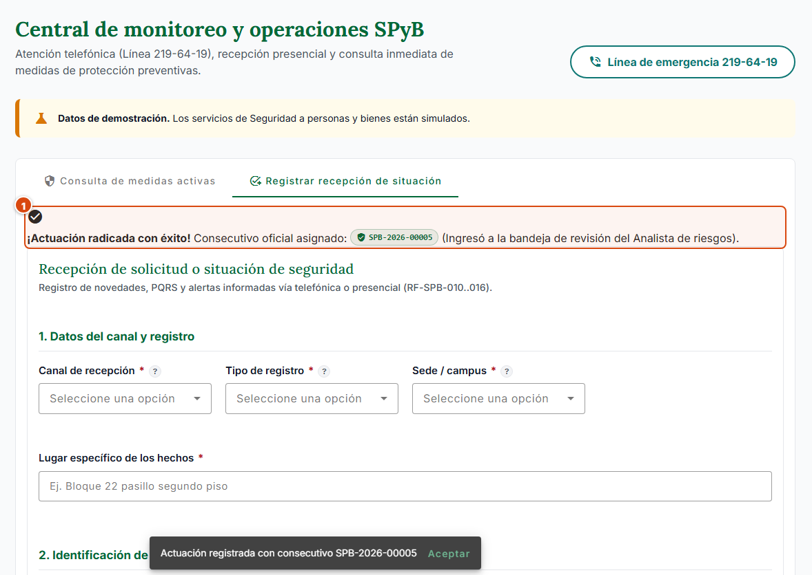
Captura 16. Aviso de actuación radicada con su consecutivo.
Menú → Seguridad (SPyB) → Reporte de vigilancia («Reporte rápido de novedades en ronda»). Es el formulario corto para quien está en campo; compárelo con la Central en la sección 4.
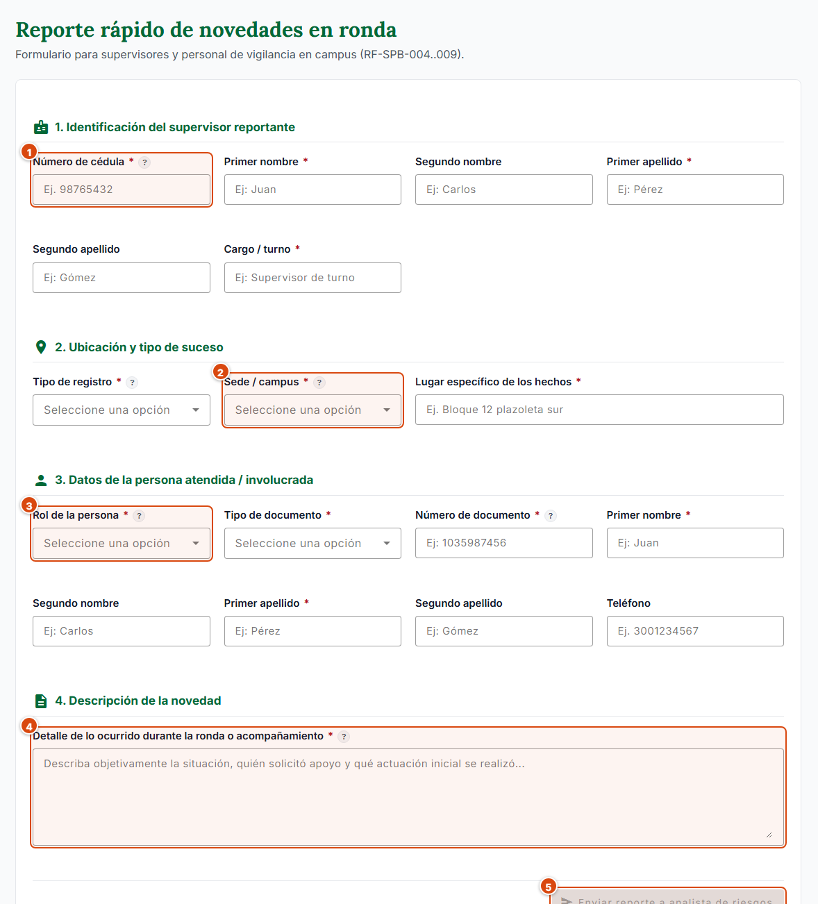
Captura 17. Formulario de reporte de vigilancia.
| # | Qué hacer |
|---|---|
| 1 | Sección 1 — Supervisor reportante. Escriba su cédula (solo números, 5 a 10 dígitos), sus nombres y apellidos y su cargo o turno. Es obligatorio para saber quién reportó. |
| 2 | Sección 2 — Ubicación. Elija el tipo de registro y la sede, y escriba el lugar exacto. |
| 3 | Sección 3 — Persona atendida. Elija su rol, el tipo y número de documento y sus nombres y apellidos. |
| 4 | Sección 4 — Descripción. Cuente qué ocurrió, quién pidió apoyo y qué actuación inicial se hizo. |
| 5 | Pulse Enviar reporte a analista de riesgos. Verá el consecutivo generado. |
Menú → Seguridad (SPyB) → Indicadores SPyB, o el botón Tablero de indicadores de la bandeja. Permite a Coordinación evaluar la oportunidad y efectividad del componente de seguridad.
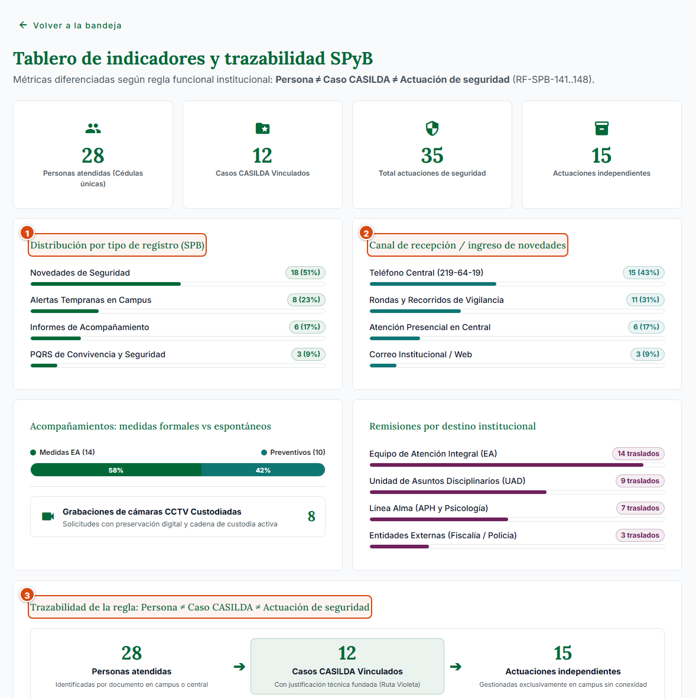
Captura 18. Tablero de indicadores y trazabilidad.
| # | Qué ver |
|---|---|
| 1 | Distribución por tipo de registro: novedades, alertas, PQRS e informes. |
| 2 | Canal de recepción: por dónde llegan los reportes. |
| 3 | Trazabilidad de la regla Persona ≠ Caso ≠ Actuación: cuántas actuaciones se vincularon a un caso y cuántas se cerraron como independientes. |
Esta pantalla no está en el menú: el vigilante abre el enlace seguro que le envió el analista (o escanea su código QR).
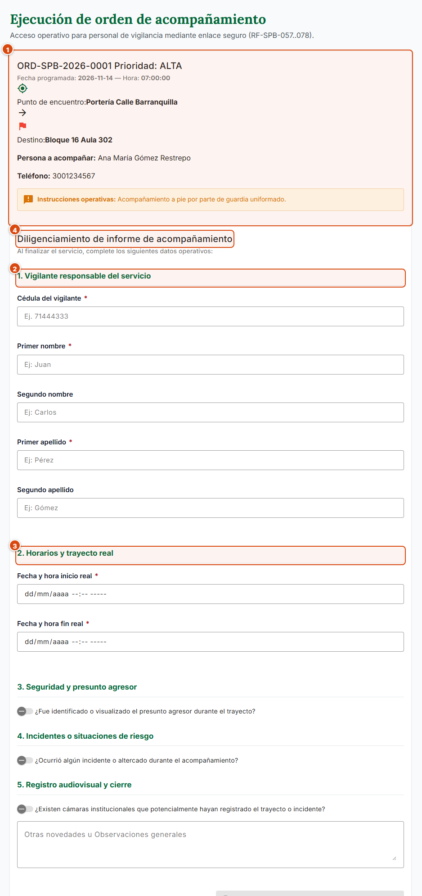
Captura 19. Pantalla del vigilante para ejecutar una orden.
| # | Qué hacer |
|---|---|
| 1 | Lea la ficha de la orden: código, persona, origen, destino, horario y prioridad. Es lo único que verá del caso. |
| 2 | Sección 1 — Vigilante responsable. Escriba su cédula y su nombre en campos separados. |
| 3 | Sección 2 — Horarios y trayecto real: fecha y hora de inicio y de fin (la de fin posterior a la de inicio, sin fechas futuras). |
| 4 | Complete el informe: seguridad y presunto agresor, incidentes y registro audiovisual. Los detalles se piden solo si marca que ocurrió algo. |
Al terminar, el sistema confirma «Acompañamiento documentado exitosamente» y la orden pasa a Finalizada en la bandeja del analista.
Con el servidor simulado activo puede usar estos datos ficticios:
| Dato | Escenario |
|---|---|
Documento 1035987456 |
Persona con medida de protección activa (caso CAS-2026-0012). |
Documento 71234567 |
Persona con una ronda preventiva vigente. |
Actuación SPB-2026-00001 |
Aparece en Nuevos; sirve para practicar la vinculación, la subsanación y las órdenes. |
| Actuaciones en En revisión y Pendiente vinculación | Una de cada una, para ver cada etapa. |
Órdenes ORD-SPB-2026-0001 y …0002 |
Aparecen en Acompañamientos. |
Enlace /seguridad/orden/token-orden-demo-001 |
Pantalla del vigilante para ejecutar una orden. |
Para ver todas las pantallas, ingrese con una cuenta con rol Administrador. Estos datos existen solo con la configuración de desarrollo y nunca se activan en un entorno desplegado. Use Salida rápida (botón rojo, Alt + Q o doble Esc) si necesita cerrar la pantalla de inmediato.